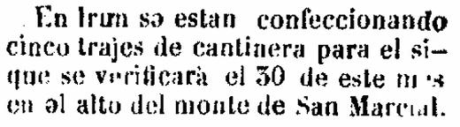
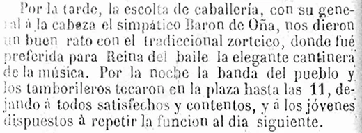
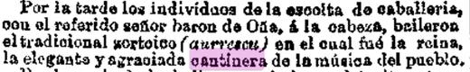

La historia del Alarde de San Marcial no puede contarse como una sola fecha ni como una simple sucesión de programas. Es una tradición formada por capas: la frontera del Bidasoa, las antiguas milicias forales, la memoria de 1522, la procesión votiva al monte, la transformación de las revistas de armas en ceremonia popular, la recuperación moderna del siglo XIX, la defensa pública de 1919, la continuidad familiar y barrial, y la etapa contemporánea abierta a finales del siglo XX.
Irun, frontera y paso estratégico
Para entender el Alarde hay que empezar por Irun. La ciudad se levanta junto al Bidasoa, en un punto que durante siglos fue paso natural, línea de vigilancia y frontera militar. Antes de ser la ciudad actual, Irun fue una comunidad situada en el extremo oriental de Gipuzkoa, frente a Lapurdi, cerca de Hondarribia y junto a caminos, vados y posiciones defensivas que podían adquirir importancia inmediata en cualquier conflicto entre las dos vertientes del Pirineo occidental.
Serapio Múgica lo explicó a comienzos del siglo XX con una imagen muy precisa: Irun era el centinela avanzado de Gipuzkoa. Desde esta zona se vigilaban los movimientos del otro lado del Bidasoa, se avisaba a los pueblos cercanos y a la Diputación, y se ocupaban los pasos del río mientras llegaban refuerzos del interior. Esa función ayuda a comprender el lema del escudo, Vigilantie custos, no como una fórmula ornamental, sino como una memoria de vigilancia, aviso y defensa.1
La frontera no era una abstracción. En las descripciones antiguas aparecen Behobia, Aritzmakur, Artiga, Aurbes, Santiago, el Juncal y Gazteluzar como puntos de un paisaje preparado para resistir una entrada enemiga. Se cortaban caminos, se abrían zanjas, se aprovechaban las mareas y los fangales, se situaban partidas de paisanos y se reforzaban los lugares por donde podía pasar artillería. Incluso el entorno urbano del Juncal aparece en las fuentes como un espacio más ligado al agua y a la defensa de lo que sugiere la ciudad actual.2
Esa posición tuvo un coste humano y material muy concreto. Múgica recordaba que en 1521 ardieron cosechas y muchas casas; que en 1638 se quemaron casas, caserías, molinos y ferrerías; y que durante la Guerra de la Independencia el paso de tropas, heridos, caballería, artillería y convoyes dejó a Irun sometido a cargas muy superiores a las de una población ordinaria. La memoria del Alarde no nace, por tanto, de una idea abstracta de frontera, sino de una experiencia repetida de vigilancia, destrucción, reconstrucción y defensa local.2
Esa condición fronteriza explica que la memoria armada de Irun no naciera solo de una batalla concreta. La comunidad vivió durante siglos pendiente del paso del Bidasoa, de la relación con Hondarribia, de la defensa provincial y de la organización vecinal en caso de amenaza. La independencia municipal llegaría en 1766, por Real Cédula de Carlos III, pero la vida propia de Irun-Uranzu y su papel defensivo eran anteriores.
Qué era originalmente un alarde
La palabra alarde no designaba al principio una fiesta. Era una revista de armas: una muestra pública en la que se comprobaba que hombres, mandos y armamento estaban en disposición de servir si la provincia era llamada a defenderse. En una tierra fronteriza, ese mecanismo tenía un sentido práctico. No se trataba de desfilar para ser visto, sino de saber con qué vecinos se contaba, qué armas había y cómo se podía responder.
En Gipuzkoa, aquellas revistas estaban ligadas al sistema foral y a las milicias locales. Con el tiempo, al cambiar la organización militar y desaparecer la función real de esas milicias, muchos alardes dejaron de celebrarse. En Irun, sin embargo, la memoria de San Marcial permitió que aquella forma antigua no desapareciera del todo: perdió su utilidad militar inmediata, pero conservó un lenguaje de mando, bandera, compañías, música, salvas y revista que acabaría transformado en ceremonia popular.
La batalla de San Marcial de 1522
El hecho que da sentido propio al Alarde irunés es la batalla del 30 de junio de 1522. Su contexto fue la situación abierta tras la conquista de Navarra de 1512 y los intentos de recuperación del reino navarro con apoyo francés. Hondarribia había caído en 1521 en manos de fuerzas navarras apoyadas por Francia, y el control del Bidasoa era decisivo. Gazteluzar, el castillo de Behobia, y el alto de Aldabe, que después quedaría asociado a San Marcial, formaban parte de ese mismo escenario.
La narración transmitida por Múgica describe primero el intento de forzar el paso de Behobia con artillería y después el movimiento nocturno hacia Aldabe. En la defensa local aparecen Juan Pérez de Azcue y Miguel de Ambulodi, con hombres de Irun, Oiartzun, Errenteria y Hondarribia, y con el apoyo de fuerzas guipuzcoanas mandadas por Beltrán de la Cueva. La tradición conserva además el episodio de las luces: jóvenes y mujeres con hachas encendidas habrían distraído al enemigo mientras las fuerzas locales avanzaban en silencio hacia la posición decisiva.3
Como sucede con muchas crónicas antiguas, algunos detalles de cifras y gestos heroicos deben leerse con prudencia. Lo esencial, sin embargo, permanece: el 30 de junio de 1522 las fuerzas locales y guipuzcoanas derrotaron al contingente franco-navarro en el entorno de Aldabe y Behobia. Aquel triunfo quedó fijado en la memoria de Irun y dio origen a una conmemoración que acabaría uniéndose a la procesión, a la ermita y al Alarde.
La memoria de 1522 se extendió por varios lugares del paisaje irunés. La ermita de San Marcial no fue el único punto recordado: también la ermita de Artiga, Gazteluzar, Behobia y los caminos de subida al monte aparecen en fuentes posteriores como escenarios cargados de significado. Incluso en artículos de finales del siglo XX se vuelve sobre los lansquenetes alemanes, las calaveras que la tradición situaba en Artiga y el papel de Gazteluzar como defensa del paso fronterizo.4
San Marcial como posición de frontera
San Marcial no fue importante solo en 1522. El monte siguió formando parte del sistema defensivo de la muga. Durante la ocupación francesa de 1719-1721, Irun organizó compañías de milicianos, aprovechó los pasos del Bidasoa y utilizó también la ermita y el alto de San Marcial como posición de defensa. Las fuentes recuerdan trincheras, partidas armadas, ocupación francesa del alto y pérdidas materiales en la ermita.5
Ese dato es importante porque impide ver el monte como un simple decorado devocional. San Marcial fue, durante mucho tiempo, un lugar de frontera real. La memoria religiosa y la memoria militar se fueron superponiendo sobre un espacio que los iruneses sabían sensible, expuesto y simbólicamente propio.
Memoria de 1813: una segunda capa histórica
La batalla de 1813, durante la Guerra de la Independencia, no es el origen del Alarde de Irun. Conviene decirlo con claridad porque el nombre de San Marcial puede llevar a confusiones. El Alarde remite en su raíz a 1522 y al voto anual ligado a aquella victoria. Pero 1813 añadió una segunda capa de memoria al mismo monte, reforzando su imagen como posición defensiva y como lugar histórico de la ciudad.
El centenario de 1913 lo muestra bien. El programa extraordinario anunció una ascensión cívico-militar-religiosa, el descubrimiento de una lápida dedicada a las víctimas de la batalla de 1813 y una misa de campaña. San Marcial quedaba así como un lugar donde se cruzaban memoria municipal, religión, paisaje y guerra, aunque cada episodio tuviera su propio significado.6
La prensa de aquellos primeros días de septiembre confirma que no fue una conmemoración menor. Novedades publicó imágenes de la campa y de la misa de campaña en el monte, con tribuna del Ayuntamiento de Irun y presencia del regimiento de San Marcial. La Época recogió además la recepción en Irun de militares franceses: una compañía de San Marcial formó con bandera y música en la estación, la banda española interpretó la Marsellesa, las fuerzas presentaron armas y el cortejo terminó en San Juan entre vivas a España y Francia. El detalle es valioso porque muestra cómo la memoria de 1813 podía celebrarse en el mismo lugar de frontera sin traducirse en hostilidad actual, sino en una ceremonia de recuerdo y reconciliación.6
La memoria de 1813 dejó también marcas materiales e institucionales. En 1817 se concedieron a Irun los títulos de Muy Benemérita y Generosa por los servicios prestados durante la guerra; la tradición del cañón de San Sebastián quedó vinculada a las conmemoraciones, y, cuando esa costumbre dejó de poder mantenerse, la memoria se trasladó a la bandera mediante la corbata concedida en 1846. Un año antes, en 1816, Pío VII había otorgado al altar de San Marcial la gracia de altar privilegiado perpetuo. Son detalles menores solo en apariencia: muestran cómo la ciudad convirtió la memoria bélica en símbolos religiosos, municipales y ceremoniales.6
Del voto y la ermita a la conmemoración anual
Después de la victoria de 1522, la tradición irunesa habla de un voto de los cabildos eclesiástico y secular: acudir cada año al monte en acción de gracias, celebrar la memoria de San Marcial y hacerlo acompañados por hombres armados. En esa unión están ya los elementos que acabarán definiendo la fiesta: el voto, la subida, la ermita, la misa, la comunidad municipal y la presencia armada.7
Las fuentes obligan, sin embargo, a separar tradición y cronología. La memoria local vincula muy pronto victoria, voto y ermita, pero los documentos conservados matizan las fechas. Las referencias a la tierra de San Marcial, a la construcción o regularización de la ermita, a las procesiones y a los gastos de aderezo aparecen de forma escalonada en el siglo XVI. Esa prudencia no debilita la tradición; la hace más comprensible. La fiesta no nació terminada, sino que fue tomando forma a lo largo del tiempo.8
La ermita tampoco fue un objeto inmóvil. Las guerras y el estado del santuario afectaron a sus imágenes, a la campana y a la propia romería. Múgica anotó que, al comenzar la última guerra civil del siglo XIX, la campana y las efigies de San Marcial, San Ramón y San Isidro bajaron a la parroquia, y que no volvieron procesionalmente al monte hasta el 24 de junio de 1891. Ese dato ayuda a entender una idea que se repite en toda la historia del Alarde: la tradición se conserva, pero a menudo se conserva después de interrupciones, traslados y recomposiciones. Una revisión posterior de las campanas de Irun añade otro detalle: la campana de San Marcial ya se documenta en refundiciones de 1661 y 1760, volvió a bajar durante la guerra carlista de 1872-1876, se refundió de nuevo en 1897 y la referencia conservada en 1943 lleva la inscripción “San Marcial ora pro nobis”.8
En los siglos XVI y XVII, las celebraciones de San Marcial convivían con un mundo festivo más amplio. Aparecen reyes cristianos y moros, emperadores, regalos de carneros, vinos y aves, banquetes, toros y regocijos regulados por ordenanzas municipales. En 1587, los vecinos de Irun-Uranzu tuvieron que ordenar aquellos excesos para limitar gastos y abusos; las ordenanzas se mandaron publicar también en lengua bascongada. Esa mezcla de fiesta, economía vecinal, control municipal, religión, alarde y bilingüismo práctico muestra el ambiente del que saldría la conmemoración posterior.9
Las revistas armadas de la Edad Moderna confirman que aquello no era solo simbólico. En 1582, por mandato de Felipe II, se reunieron en Irun más de cuatrocientos hombres bajo el capitán Pedro de Urdanibia para ser revisados. Lope Martínez de Isasti, que asistió siendo joven en lugar de su padre, recordaría después aquel alarde como experiencia vivida. En 1756, durante la colocación de la primera piedra de la Casa Consistorial, también se celebró un alarde con mosquetes, mechas encendidas, caja de guerra y pifano. La plaza de San Juan fue así escenario civil, municipal y armado mucho antes del Alarde moderno. 10
La muestra de 1582 merece detenerse un instante porque permite ver la escala real de una revista antigua. La orden exigía juntar a los soldados en veinticuatro horas; salieron un domingo por la mañana, mandados por Pedro de Urdanibia, cuatrocientos ocho hombres bien armados y equipados; fueron contados por representantes de Hondarribia e Irun y llegaron hasta el humilladero de Artaleku. No era todavía la fiesta moderna, pero sí un antecedente claro del lenguaje que el Alarde conservaría: convocatoria vecinal, mando local, armas, recuento, orden y exhibición pública.10
La relación entre procesión y revista de armas fue cambiando. Antonio Aramburu insistió en una distinción útil: durante mucho tiempo el alarde obligatorio de armas y la procesión votiva no fueron exactamente lo mismo. En 1804, por economía y organización, ambos planos se unieron en una sola jornada. Pocos años después desaparecieron los alardes como obligación foral, pero la procesión armada y la memoria de San Marcial siguieron vivas. De ahí arranca una parte esencial del Alarde contemporáneo: no inventa una fiesta nueva, sino que conserva en forma ceremonial una práctica anterior ya transformada. 11
De obligación militar a fiesta cívica
En el siglo XIX se produjo el cambio decisivo. Las antiguas milicias perdieron su función práctica y, tras las guerras carlistas y la abolición foral de 1876, el marco que había dado sentido militar a los alardes desapareció. En otros lugares, esa desaparición significó el fin de la revista. En Irun, la memoria de San Marcial permitió otra salida: conservar la forma, pero darle un contenido conmemorativo, popular y local.
La prensa de finales del siglo XIX entendió bien esa transformación. En 1894 se describía el Alarde como un “ejército de un solo día”: un simulacro de lo que en otro tiempo había sido una realidad militar, representado con seriedad por vecinos que ya no acudían a una obligación de guerra, sino a una fiesta de memoria. Esa idea sigue siendo una de las claves para leer el Alarde: conserva formas militares, pero su sentido moderno es civil, municipal y festivo.12
Esa fórmula resume muy bien la transformación: el Alarde conserva el vocabulario de la milicia, pero lo desplaza hacia una representación anual. La seriedad del mando, las armas, la música, las descargas y la bandera no eran accesorios pintorescos; eran el modo de dar forma pública a una memoria local. Al mismo tiempo, la prensa y los artículos de opinión advertían ya contra dos riesgos opuestos: olvidar el origen histórico o convertir la fiesta en una imitación rígida de un ejército profesional. Entre esas dos tensiones se movió buena parte del siglo XX.12
Una curiosidad publicada por El Bidasoa en 1917 ayuda a separar advocación, patronazgo y conmemoración. El articulista recordaba que San Marcial no era el patrón de Irun, puesto que ese lugar correspondía a San Buenaventura, celebrado el 14 de julio; aun así, admitía que la fiesta del pueblo se había articulado alrededor de San Marcial por la fuerza de la memoria histórica. La observación no cambia el origen del Alarde, pero sí explica por qué una victoria recordada en el monte acabó ocupando el centro del calendario festivo local.56
La configuración moderna del Alarde
La forma moderna del Alarde se documenta con claridad en torno a 1880 y 1881, aunque las fuentes insisten en que no nació de cero en esos años. En 1880 ya se hablaba de trajes de cantinera para el acto del 30 de junio; las crónicas mencionan compañías, oficiales, tambor y pito, General, escolta de Caballería, salvas ante la iglesia, subida al monte, regreso y descargas finales. En 1881, la autorización oficial y la mejora organizativa dieron mayor estabilidad a una forma que ya era reconocible.13
Un ejemplar de El Bidasoa publicado el 27 de junio de 1880 añade un matiz importante: aquella recuperación se vivió también como restablecimiento. El periódico decía que hacía algunos años había dejado de celebrarse en la villa la función popular del día 30, en conmemoración de las batallas ganadas por los antepasados en la altura de San Marcial en 1522 y 1813. Añadía que, desaparecidos los motivos que habían impedido aquella festividad, se iba a restablecer con autorización competente. La noticia no enumera todavía una estructura completa de unidades, pero sí permite leer 1880 como un punto de regreso: no el nacimiento absoluto del Alarde, sino la reanudación pública de una costumbre que la memoria local reconocía como propia.13
Los otros documentos de ese mismo año encajan con esa lectura. El Urumea avisaba, pocos días antes de San Marcial, de que en Irun se estaban confeccionando cinco trajes de cantinera para el acto que debía verificarse el 30 en el alto del monte. La misma cabecera, ya después de la fiesta, fue más precisa sobre la interrupción: atribuía a la guerra y al estado excepcional de las provincias que el Alarde no se hubiera celebrado desde 1866, “si mi memoria no es infiel”, y explicaba que el Ayuntamiento había pedido que subiera el cañón concedido a Irun para hacer los disparos de costumbre. También conservó un nombre de mando para aquella reanudación: las fuerzas reunidas en la plaza fueron dirigidas por el joven Barón de Oña, del Ayuntamiento, precedidas por la música de la villa. 13
El Bidasoa, por su parte, remarcó que se había organizado en pocos días y que había resultado animadísima, sin desgracias ni desórdenes. A primeras horas sonó la diana; después recorrió la población la música de la villa; a las siete entraron las compañías del Alarde con sus oficiales al son de tambor y pito; reunidas en la plaza, pasaron revista ante su General, acompañado de un piquete de Caballería, y marcharon a la iglesia para escoltar la procesión con salvas de ordenanza. La misma crónica local menciona después a la elegante cantinera de la música durante el zortziko de la tarde. El Liberal repitió desde Madrid una imagen muy próxima: estandarte de Irun custodiado por mosqueteros de Bidasoa, misa en las cercanías de la ermita, regreso con nuevas descargas y cantinera de la música del pueblo. Es decir: 1880 aparece como reanudación, pero también como una jornada ya cargada de rasgos reconocibles del Alarde moderno. 13
{kind=link}

{kind=link}

{kind=link}

La prensa local de 1881 muestra que aquella recuperación no estaba cerrada ni era vista todavía como una forma perfecta. Antes de la fiesta, El Bidasoa defendía que el aniversario debía celebrarse con más formalidad, con trajes adecuados, armas propias de la época recordada y una organización capaz de dar al acto el carácter de verdad que reclamaba la memoria local. El periódico usaba incluso una fórmula significativa, “fiesta, alarde o aniversario”, como si la celebración estuviera todavía fijando su lenguaje público. Después del 30 de junio, la misma cabecera volvió sobre la idea: el Alarde conservaba a su juicio un carácter insuficiente para el hecho que conmemoraba, pero podía ganar propiedad y brillantez si el vecindario y el Ayuntamiento empujaban juntos su mejora.13
La crónica del 3 de julio, pese a estar transmitida por un ejemplar de lectura difícil, deja una imagen muy rica de aquel San Marcial de 1881. La víspera hubo iluminación, baile con la banda municipal y retreta a las once de la noche. A las cinco de la mañana del día 30 ya había gran animación en las calles; poco después empezaron a llegar grupos de hombres armados, se hizo esperar la música con su cantinera y apareció como General en jefe de las fuerzas Román S. de Vicuña, primer teniente de alcalde. Reunidas las fuerzas, se recibió la bandera de la villa, se hicieron descargas en los lugares acostumbrados y la comitiva subió al monte, donde la multitud oyó misa campal, almorzó y bailó. El regreso acompañó al Cabildo hasta la iglesia; tras las salvas de ordenanza, las fuerzas se disolvieron en la plaza desfilando ante el General. Por la tarde hubo aurresku, se elevó un globo con la leyenda “Loor a los héroes de San Marcial. Año 1881” y la fiesta concluyó con fuegos artificiales preparados por el pirotécnico Sr. Alexandre.13
En 1882 esa misma conversación seguía abierta. Pocos días antes de San Marcial, la sección local de El Bidasoa evitaba publicar un programa detallado “para que las costumbres se conserven” y resumía la jornada con una frase reveladora: las fiestas serían como las del año anterior, y las del año anterior como las de hacía siglo y medio. A la vez anotaba una novedad concreta, “varias cantineras más que los años anteriores”, y sugería prolongar la estancia en la ermita para aliviar lo agitado de la subida y dar más vida a la romería. La semana siguiente, el periódico volvió a enlazar la fiesta contemporánea con el relato antiguo: recordó el voto de los cabildos eclesiástico y secular, la procesión acompañada por mosqueteros naturales de Irun, la misa anual y el alarde general de San Pedro que la villa conservaba por costumbre propia. Y el 9 de julio insistió en una preocupación ya visible en 1881: si los alardes querían conservar verdad histórica, debían cuidar trajes y atributos, porque la desoriginalización del aparato festivo podía borrar las huellas de la memoria que se pretendía representar.13
Un número de El Bidasoa publicado el mismo 1 de julio de 1883 permite escuchar, además, una voz local muy temprana y nada solemne. En el artículo “De ayer a hoy” el periódico contraponía la batalla recordada con la fiesta vivida en la villa y criticaba que muchos acudieran a San Marcial más pendientes de la romería que de los antiguos combatientes. Precisamente por ese tono crítico, el texto es útil: deja ver que el Alarde ya funcionaba como celebración popular, con subida al monte, música, tambores, procesión, artillería, escuadrones, caballería e infantería. En la crónica semanal del mismo número aparecen también los preparativos de armas, caballos, sables, merienda, trajes de fiesta y cantineras. No es una ordenanza ni una relación oficial, sino una mirada irunesa desde dentro de la fiesta, cuando la conmemoración militar y la alegría de San Marcial convivían ya en una misma jornada.13
Esa pedagogía local continuó en 1884. La víspera de San Marcial, El Bidasoa publicó una explicación de la fiesta “con el fin de que nuestros lectores sepan el por qué se celebra dicha fiesta”, extrayendo de la historia de la Universidad de Iruranzu los episodios de 1522, el voto, la ermita, la procesión de los cabildos y el acompañamiento de mosqueteros naturales de Irun. El interés del texto no está en que descubra un origen distinto, sino en que muestra cómo la prensa irunesa sentía la necesidad de explicar la fiesta a sus propios lectores y de fijar el vínculo entre la celebración anual y la memoria histórica de la villa. Una semana después, el mismo periódico dejó una nota breve pero expresiva sobre el batallón de aquel año: eran muchos los elogios que había oído hacer de la 8ª compañía por lo bien instruida y organizada que resultó.13
En 1885 vuelve a aparecer esa mezcla de expectativa, crítica y costumbre asentada. A mitad de junio, El Bidasoa discutía la intención de uniformar a la banda municipal y, en una nota que presentaba con cautela, decía haber oído que para las próximas fiestas de San Marcial acudirían a Irun dos o tres compañías de paisanos armados y uniformados procedentes de varios pueblos de la provincia. No lo daba como noticia garantizada, pero el apunte es valioso porque muestra hasta qué punto el lenguaje de uniformes, compañías y aparato armado seguía siendo parte de la conversación pública previa al Alarde. El 28 de junio, cuando el programa había llegado tarde a la redacción, el periódico confirmó a última hora que habría Alarde, Caballería, Artillería, cantineras, música y fuegos. Añadía, con tono burlón, que el programa de salida y regreso de la procesión y del Alarde sería “como siempre”: la frase resume bien la situación de esos años, en los que la fiesta podía discutirse, ironizarse o criticarse, pero ya se reconocía como una costumbre con forma esperada.13
El año siguiente confirma esa tensión entre costumbre y desgaste. El programa publicado por El Bidasoa para 1886 mantenía la fórmula conocida: Diana, banda municipal, tamborileros recorriendo las calles con el popular himno de San Marcial, Alarde en la forma acostumbrada, reunión de fuerzas en la plaza de San Juan, procesión hacia la ermita, misa de campaña, regreso y salvas ante los cabildos. En la misma página, unos versos irónicos enumeraban lo que el autor decía que no podría ver: soldados, cantineras, procesión, banda, Alarde en la plaza, tiendas, romería y cañonazos. Tras la fiesta, el tono se volvió más crítico. En una crónica taurina del 4 de julio, el periódico decía haber notado que “cada vez acude menos gente a presenciar el carnavalesco alarde” y añadía que, si no se tomaba con más interés, habría que hacer algo nuevo para atraer y distraer al público. La frase es significativa porque no niega la continuidad de la fiesta, pero muestra que en los años ochenta del siglo XIX también hubo voces que percibían rutina, cansancio o pérdida de atractivo.13
En 1887, sin embargo, la prensa vuelve a mostrar capacidad de reacción. Días antes de San Marcial, El Bidasoa decía que el “elemento joven” quería sacudirse el aburrimiento y organizar algo importante para el día 30. La idea incluía una carroza engalanada de forma alegórica para rendir tributo a quienes murieron en la jornada que daba origen a la fiesta, coronas recordatorias de aquellos héroes, un Estado Mayor lucido y una escolta a caballo. El periódico animaba además a los vecinos con medios a contribuir, convencido de que, cuando las cosas se tomaban con interés, solían salir adelante. Después de la fiesta, el mismo periódico resumía la jornada como celebrada con toda pompa, con la juventud de Irun armada, tiempo primaveral, subida temprana de la gente a la ermita, comida en el monte, regreso hacia mediodía, ausencia de incidentes y buen número de forasteros. El dato encaja bien con la tensión de la década: junto a las quejas por la rutina, seguía existiendo una voluntad local de vestir la conmemoración y mantenerla visible ante la ciudad y quienes acudían desde fuera.13
En 1889, La Libertad describió un Alarde con Diana de Villarrobledo, pífanos y tambores, reunión en San Juan, bandera tradicional de Irun, misa de campaña, evoluciones, regreso, tres descargas de ordenanza y siete compañías vinculadas a barrios o grupos: Miaca, Anaca, Venta, Calle, Pridenoa, Bidasoa y Veteranos, además de Artillería y Caballería. El Guipuzcoano, ese mismo día, confirma la grafía Pridenoa y conserva además una relación de mandos: José María Olazabal, José Arana, Manuel Pedrós, Francisco Aramburo, José Parra, José Antonio Arruabarrena y Manuel Vicuña, citados en el orden respectivo de las compañías. La Unión Liberal aporta una mirada más escénica del mismo año: sitúa a Juan Arana al mando de las fuerzas, precedido por zapadores voluntarios, seguido por ayudantes y escolta de caballería, y con voluntarios a pie de boina roja, fusil al hombro y una cantinera animando las filas; tras ellos marchaban Infantería y Artillería hacia el monte. Ahí se ve ya el esqueleto de la fiesta moderna: música, bandera, compañías, monte, salvas y ciudad. Una semana más tarde, La Patria de Madrid recogía todavía el eco de la jornada con una nota breve que daba por celebrado brillantemente en Irun el aniversario del hecho de armas de San Marcial. La cautela queda en otro punto: el Archivo Municipal de Irun no ha encontrado referencia propia a Pridenoa en las cuentas municipales del periodo y sugiere que podría tratarse de una segunda compañía de Bidasoa, algo coherente con la documentación municipal que sitúa a Bidasoa con dos compañías entre 1887 y 1896, salvo en 1888, cuando aparecen separadas Bidasoa y Behobia tras la segregación del barrio de Behobia en junio de 1887.14
Una carta enviada desde Irun a El Correo Español en 1892 permite ordenar mejor esa etapa. El corresponsal explicaba que, quince o veinte días antes de San Marcial, los jóvenes que iban a tomar parte en el simulacro elegían jefes, aprendían instrucción, buscaban trajes y escopetas y, con autorización, formaban cuerpos de Caballería, Artillería, Zapadores e Infantería. Cada cuerpo llevaba cantinera. El día 30, la banda tocaba Diana al amanecer, las tropas se reunían en la plaza, recibían la procesión en la iglesia con salvas, subían a la ermita, formaban en el alto, disparaban tres salvas al alzar durante la misa de campaña y regresaban por la tarde en el mismo orden. La fuente mezcla una lectura política propia de su periódico con una descripción práctica muy útil: el Alarde ya aparece como una fiesta preparada por barrios y cuerpos, con mando, uniforme, cantinera, armas, salvas, procesión y monte.52
La crónica de 1894 permite asomarse a otra fotografía de ese momento de transición. El General era Indart y la fuerza se describía con zapadores-minadores, infantería, artillería, bandera, escolta y una carroza-mausoleo de aire conmemorativo. El dato no interesa solo por la lista de elementos, sino porque muestra un Alarde todavía flexible, capaz de combinar unidades de barrio, representación histórica, solemnidad cívica y recursos escénicos que no siempre permanecieron.12
Cinco años más tarde, El Correo de Guipúzcoa dejó una crónica de gran interés para entender esa misma fase. En 1899 habla de una sección de zapadores-minadores, música de Irun, tambores y un batallón de San Marcial compuesto por siete compañías y una pieza de Artillería rodada. La crónica identifica a Manuel Pedrós como General, con Alfredo Pérez y Antonio Cavanilles como ayudantes; cita la pieza de Artillería al mando de José Pedrós y del sargento Emilio Lapia; sitúa la escolta de Caballería bajo el cabo Eusebio Pedrós; y precisa que la bandera del batallón era la del Ayuntamiento de Irun, llevada por Miguel Nogueras. Es una fotografía muy concreta del Alarde antes de la descripción de Múgica: el sistema de compañías estaba ya definido, pero todavía convivía con una organización flexible, casi de batallón improvisado para la jornada.50
El libro de Múgica de 1901 fija esa imagen con gran riqueza de detalles. Antes del día 30 se limpiaban calles y edificios, se organizaban funciones religiosas, se preparaban fondas y comercios, la Banda Municipal ensayaba, los soldados limpiaban armas y las cantineras preparaban sus trajes. El General reunía a jefes y capitanes en la Casa Consistorial, y el día de San Pedro se hacían revistas en distintos puntos. El Alarde que describe estaba formado por comandante jefe, ayudantes, batería de artillería rodada, compañías, hacheros, música de pífanos y tambores, banda y cantineras.15
Múgica conserva además un dato especialmente valioso sobre el orden de formación en la Alameda. Primero iba la escuadra de hacheros; después la banda de pífanos y tambores y la música; seguían el comandante jefe, Bidasoa, Ventas, Meacar o Minas, Pueblo, Bandera, Anaca, Lapitze, Olaberria, Behobia y Fuenterrabia; y a continuación la batería de artillería. El valor histórico de esa relación está en que muestra un Alarde reconocible, pero todavía distinto del actual: ni las unidades ni su orden han sido siempre los mismos. 16
Otros detalles de 1901 permiten leer la fiesta desde dentro. Se distribuían ocho cartuchos por individuo; en el monte, terminada la misa, la fuerza recibía una peseta por soldado, que muchos empleaban en obsequiar a la cantinera de su compañía; y la Artillería mantenía su presencia con un cañón de madera porque las salvas de cañón habían sido prohibidas con carácter general. Ese cañón simbólico explica bien la lógica del Alarde: cuando una práctica real dejaba de ser posible, se conservaba su memoria mediante una forma ritual. 16
El crecimiento de la fiesta empezó pronto a rozar los límites físicos de la ciudad antigua. Según la reconstrucción de Sagrario Arrizabalaga, en 1895 la plaza de San Juan se quedaba pequeña para el cierre del Alarde y el General José Indart trasladó las evoluciones finales a la plaza del Ensanche. Al año siguiente dejó de realizarse en San Marcial el antiguo simulacro de batalla. En 1905 y 1907 volvió a discutirse si Urdanibia debía sustituir a San Juan como espacio principal de formación y desfile, debate que revela una tensión muy concreta: mantener la imagen heredada y, al mismo tiempo, acomodar una participación cada vez mayor.17
Los programas de 1906, 1912 y 1914 no deben leerse como crónicas anuales completas, pero sí confirman una secuencia estable: concentración de fuerzas, saludo con salvas a los cabildos, subida a San Marcial, misa de campaña, romería y regreso. Los de 1912 y 1914 resumen las fuerzas como Batallón de Infantería, Sección de Artillería y Sección de Caballería, con sus cantineras. Esa fórmula muestra que el Alarde era ya un conjunto ordenado de cuerpos y no solo una procesión acompañada de paisanos armados.17
La prensa diaria confirma esa misma imagen desde fuera de los programas oficiales. En 1911, El Correo de Guipúzcoa describía el Alarde como un batallón de Infantería, una sección de Artillería y otra de Caballería con sus correspondientes cantineras, a las órdenes de un General, formando columnas de honor ante los cabildos y marchando después a San Marcial para la misa de campaña y la romería. Al año siguiente, El Correo del Norte lo narró con un tono más visual: redobles de tambores, el General Pedrós a caballo, Estado Mayor, escuadrón con guerreras blancas, infantería de boina roja, música, tambor mayor, bandera municipal, estandarte religioso de San Marcial y Artillería con su cañón. No añade una estructura nueva, pero sí confirma que, antes de la interrupción de la guerra europea, el Alarde era ya reconocible por la combinación de tropa, música, mandos, cantineras, bandera y salvas.53
La prensa donostiarra de esos años ayuda a ver cómo se presentaba el Alarde fuera de Irun. En 1904, El Pueblo Vasco publicó una estampa de las fiestas de San Marcial con el batallón formado en la plaza de San Juan; la imagen refuerza una idea que aparece una y otra vez en los textos: el Alarde no era solo la subida al monte, sino también una formación pública de ciudad, reconocible por su bandera, sus compañías, sus mandos y sus salvas. Dos décadas después, el mismo periódico describía la jornada de 1924 con las compañías acudiendo a Urdanibia acompañadas de chistu y tambor, Luis Rodríguez actuando de comandante, el General Eusebio Pedrós incorporándose en San Juan, la recogida de la bandera y las salvas ante la parroquia. El detalle es pequeño, pero expresivo: muestra la combinación de barrio, música, mando militarizado y rito cívico que daba forma al Alarde moderno.49
En la segunda mitad de los años veinte y primeros treinta, las crónicas de El Pueblo Vasco muestran un Alarde ya muy numeroso y plenamente asentado en la ciudad. En 1928 se habla de un batallón de poco más de tres mil hombres, con hacheros, Artillería, Banda, Tamborrada y Estado Mayor; el periódico acompañaba la crónica con fotografías de una compañía con su cantinera y de una descarga. En 1931, ya en el nuevo marco republicano, la misma cabecera seguía describiendo la Diana de Villarrobledo, la reunión de fuerzas en Urdanibia, la toma de mando de Eusebio Pedrós, la bandera municipal, las salvas y la misa de campaña. En 1933, el General documentado por la crónica era Jorge Segura. Estos datos no cambian el esquema, pero ayudan a ver la continuidad de la forma ceremonial en años de fuerte cambio político.51
También había debates internos. En 1926, una circular dirigida a capitanes recordaba la asistencia a la misa del monte y la disciplina durante el desfile; la prensa aceptaba la necesidad de orden, pero advertía contra convertir el Alarde en una imitación rígida de un ejército regular. Esa tensión entre marcialidad, alegría popular y respeto a la forma heredada reaparece una y otra vez en el siglo XX.
Las revistas ilustradas de la época permiten ver cómo se percibía esa mezcla desde fuera de Irun. Novedades presentó en 1910 las fiestas como un espectáculo de corre-calles, bajada alegre de San Marcial, cantineras, formación ante el Ayuntamiento, órdenes del General y descargas clásicas; en 1913 volvió a fijarse en los hacheros o gastadores, las descargas de Infantería y la formación de las fuerzas antes de la misa del monte. En 1914 resumía el Alarde como un simulacro de guerra en ambiente de paz: memoria de una batalla cruenta transformada ya en fiesta popular.41
El Álbum gráfico descriptivo del País Vascongado, publicado en esos mismos años, ofrece una síntesis visual muy parecida. Bajo el título “La fiesta de San Marcial en la ciudad de Irún”, reúne misa de campaña en torno a la ermita, grupo de iruneses bailando en la pradera, formación de las fuerzas del Alarde en la plaza Consistorial, piquete realizando una descarga, camión de Artillería, el General Eusebio Pedrós, pueblo camino de la ermita, cantinera, Banda, bandera de la ciudad y cabo de gastadores. La página es útil porque muestra cómo, hacia 1914-1915, el Alarde se entendía ya como un conjunto de escenas inseparables: monte, ciudad, música, bandera, mando, cantinera, Artillería y descargas.45
Esa lectura no era solo gráfica. En 1910, El buen combate publicó textos que defendían el Alarde como una tradición antigua llena de alma, no como una invitación a la violencia. Pedro Mourlane Michelena escribía sobre los hacheros como figuras de una memoria heroica en un tiempo que quería la paz, y Alfredo de Laffitte presentaba la batalla de San Marcial como pretexto conmemorativo para reunir a los guipuzcoanos y gritar “¡Viva Irun!”, sin ánimo de ofender a los vecinos. La prensa conservaba así una idea que será recurrente: marcialidad formal, pero sentido festivo y local.42
La estructura como relato de evolución
La composición del Alarde no ha sido una lista fija desde el principio. Las fuentes permiten seguir una evolución: de las antiguas revistas de armas y la procesión armada se pasó a una formación moderna con mandos, compañías, música, artillería, caballería, hacheros y cantineras. Antes de la configuración contemporánea llegó a desfilar una sola compañía al mando del primer Teniente Alcalde; en 1881 se citan ocho compañías, siete vinculadas a barrios históricos y una del pueblo; y durante el siglo XX se incorporaron nuevas unidades nacidas de barrios, calles, sociedades, ámbitos deportivos o espacios de trabajo.34
La prensa recuperada por Bidasoan matiza el arranque moderno. En 1880 ya se habla de grupos de soldados de distintos barrios, armados con escopetas, que acudían a la plaza y volvían después por secciones a sus lugares. En 1881, una carta publicada por El Urumea menciona pelotones de cada barrio, bandera de la villa, mando del primer teniente de alcalde Román S. de Vicuña, Caballería y cantineras. El dato es importante porque muestra una reorganización progresiva de una práctica reconocible, no una estructura cerrada desde el primer momento.
En 1889, La Libertad y El Guipuzcoano conservan una composición anterior a la descrita por Múgica: siete compañías identificadas como Miaca, Anaca, Venta, Calle, Pridenoa, Bidasoa y Veteranos, además de Artillería y Caballería. El segundo periódico añade, además, los mandos respectivos de esas compañías, lo que permite asociar Pridenoa con Francisco Aramburo. La prudencia documental se mantiene porque el Archivo Municipal no ha localizado Pridenoa como compañía independiente en las cuentas revisadas y plantea que pudiera corresponder a la segunda compañía de Bidasoa documentada en esos años. En 1894, La Voz de Guipúzcoa ofrece otra fotografía: dieciocho zapadores minadores, 224 infantes con jefes, oficiales y cantineras, batería de artillería, General Indart con ayudantes y escolta, recogida de la bandera, incorporación del elemento religioso y civil, carroza-mausoleo y subida al monte tras las descargas reglamentarias. El Alarde era ya reconocible, pero todavía admitía formas que después desaparecerían. 35
La restitución de 1919 muestra qué piezas se consideraban imprescindibles para que el Alarde volviera completo: hablar con capitanes, reunir hacheros, formar la Caballería, disponer de Artillería rodada, recuperar el viejo cañón de madera, ordenar las compañías, escoger cantineras y devolver a la calle la música propia. Ese mismo año, la crónica de La Información enumera en el regreso escuadra de gastadores, tambores, música, General Eusebio Pedrós con Estado Mayor y ayudantes, escolta de Caballería, catorce compañías de Infantería y Artillería pesada con clarines y cantinera. No era una teoría: era la composición práctica del Alarde recuperado.36
En la posguerra, las relaciones publicadas en 1943, 1946 y 1947 muestran una estructura ya estabilizada: General, Comandante, Hacheros, Tamborrada, Banda, Caballería, compañías de Infantería y Artillería. Pero incluso entonces la organización seguía viva. Luis de Uranzu describió en 1948 el Alarde “por dentro”: nombramiento del General, reuniones de capitanes desde el último domingo de mayo, disponibilidad de alpargatas blancas, puntualidad, ramos de cantineras, niños disfrazados, horarios de Tamborrada, efectivos de Uranzu o caballos para la Caballería. La composición visible del día 30 dependía de una preparación previa, minuciosa y muy local. La crónica gráfica de La Voz de España del 1 de julio de ese año completa la escena desde la calle: una compañía formada, la bandera histórica saliendo del Ayuntamiento escoltada por fuerzas del Alarde y el General Eusebio Pedrós dando órdenes a los capitanes de las compañías. No añade una unidad nueva, pero sí confirma visualmente el papel central de bandera, mando y compañías en la posguerra inmediata. 37
También hubo piezas hoy desaparecidas o transformadas. En 1946 se recordaban una sección de Cruz Roja con camilleros y botiquín, un grupo de lanceros que reforzaba la Caballería y, hacia 1870, una representación de marina de guerra organizada por Joshequin Emparan con pescadores y gabarreros, montada en una lancha sobre ruedas de gurdiya y subida hasta el monte. Ese tipo de detalles evita imaginar el Alarde antiguo como una copia exacta del actual: la continuidad existe, pero ha convivido con ensayos, añadidos, desapariciones y adaptaciones.38
El crecimiento obligó a regular. En 1942, el Ayuntamiento indicó a los capitanes que cada compañía debía llevar como máximo dos pífanos y dos tambores para uniformar el acompañamiento musical. En 1967, El Bidasoa publicaba ya una advertencia muy expresiva sobre el “gigantismo” del batallón: el aumento de participantes dificultaba el control, amenazaba el orden interno y obligaba a pensar en límites, selección y representación por barrios. Ese mismo mes se modificó el artículo 27 de las Ordenanzas para que las compañías desfilaran con dos tenientes en vez de uno, precisamente por el número creciente de hombres en cada unidad. En 1978, Uranzu reproducía normas sobre composición de compañías, número de músicos, edades mínimas, uniforme, prohibición de disparos sueltos y responsabilidad de los mandos. La ordenanza publicada íntegramente por Bidasoan en 1980 muestra ese esfuerzo de codificación con más detalle: fijaba orden de formación, edad mínima, composición de compañías, elección de cantineras, funciones de Hacheros, Tamborrada, Banda, Caballería y Artillería, música propia, movimientos de armas, uniforme y régimen disciplinario. En 1985, José Antonio Apalategui explicó que cada compañía debía formar una comisión de diez personas y colocar un cabo cada diez filas, repartiendo la disciplina dentro de la propia tropa. En 1989 la escala era ya enorme: unas 7.000 personas, quince compañías de Infantería y una Banda que alcanzaba 125 componentes. En 1997, una nota de Juan Antonio Lecuona recogía la opinión del cabo de Hacheros Jon Ponte para subrayar que la presencia de participantes ebrios, recordada como algo más habitual en otros tiempos, había llegado a ser nula en el Alarde de aquel año. 39
La ordenanza de 2016 fija la estructura vigente: Escuadra de Hacheros, Tamborrada, Banda de Música, General, ayudantes, Escolta de Caballería, Comandante, compañías de Infantería y Batería de Artillería. También regula la mayoría de edad y el lugar ceremonial de los cabildos eclesiástico y secular cuando acuden por invitación de la Junta de Mandos. Vista en perspectiva, esa formulación no borra la historia anterior: la ordena para el presente. 40
1919: el periódico El Alarde y la restitución tras cuatro años
Los cuatro números del periódico El Alarde, publicados entre marzo y abril de 1919, son una fuente decisiva porque muestran que la continuidad de la fiesta no fue automática. Durante la Primera Guerra Mundial el Alarde había quedado suspendido por consideración hacia Hendaia y hacia los vecinos franceses afectados por la guerra. Siguió habiendo Diana, subida al monte, misa y romería, pero no la formación completa del Alarde. En 1919, acabada la guerra, un grupo de iruneses impulsó un semanario dedicado exclusivamente a pedir su restitución.18
La duda venía madurando desde antes del armisticio. En junio de 1918, cuando el Alarde seguía sin celebrarse como formación completa, El Bidasoa publicó un artículo que proponía directamente su sustitución: subir al monte como excursión o romería, pero sin simulacro de ejército. El argumento partía del cansancio moral ante la guerra europea y rechazaba celebrar con formas militares una memoria de combate. Precisamente por eso, la campaña de 1919 tiene más fuerza histórica: no defendía un trámite administrativo, sino la recuperación de una forma ceremonial que algunos ya daban por prescindible. 18
La historia de aquel periódico tiene algo de escena local. Los promotores se reunieron en el chalet de Ocaranza, en el paseo de Colón; eligieron director por sorteo, metiendo papeletas en una boina; la suerte señaló a José Elizalde; Marcos Lapitz facilitó la impresión; y los ejemplares salieron sin publicidad, con pérdidas asumidas por los propios impulsores. El primer número no vendió como esperaban, pero los siguientes fueron arrebatados de las manos de los vendedores. La última noche de imprenta, cuando el cuarto número coincidió con San Marcos, los redactores llevaron opillas, jerez, café, coñac y puros a los tipógrafos, una pequeña escena de confraternización alrededor de una campaña que ya se sabía cumplida. Cuando el Ayuntamiento acordó recuperar el Alarde, el periódico se despidió: había nacido para una misión concreta y la consideraba cumplida.19
Ese episodio tiene valor histórico porque enseña cómo se defendía la tradición antes de que existieran las estructuras actuales: por reuniones particulares, imprenta local, artículos de opinión, presión municipal y una red de iruneses dispuestos a asumir gastos y trabajo. La continuidad del Alarde no fue solo herencia recibida; en algunos momentos fue también una decisión consciente de recuperarlo, explicarlo y organizarlo.
Lo más valioso de El Alarde no es solo su campaña, sino la imagen que ofrece de lo que se consideraba imprescindible en 1919: hacheros, caballería, batería de artillería, compañías de infantería, pífanos, tambores, música, cantineras, respeto ceremonial, marchas propias y bandera. El periódico defendía la fiesta como memoria civil de Irun, no como exaltación de la guerra. Para sus redactores, el Alarde era la forma heredada con la que el pueblo recordaba una defensa antigua y renovaba cada año su compromiso con San Marcial.20
La insistencia de aquellos artículos se entiende mejor al recordar el motivo del parón. El propio periódico explicaba que, durante los cuatro años de la guerra europea, Irun había renunciado a la parte ruidosa de la jornada por delicadeza hacia Hendaia y hacia los vecinos franceses, para quienes las descargas festivas podían sonar dolorosamente cerca de una guerra real. Terminada la contienda, los promotores defendían que ya no había razón para mantener incompleta la fiesta: no pedían inventar un acto nuevo, sino devolver al 30 de junio su forma entera, con formación, salvas, música, unidades y marcha al monte. 20
El debate no fue solo sentimental. El Alarde respondió a quienes veían la fiesta como bárbara, costosa, fúnebre o perjudicial, y llegó a plantear que, si hacía falta, se consultara al pueblo. Ese detalle importa porque muestra una tradición sometida a discusión pública: en 1919 el Alarde no reapareció por inercia administrativa, sino porque una parte visible de la ciudad quiso razonar su continuidad, convencer al Ayuntamiento y recuperar una liturgia que consideraba propia. 20
La recuperación de 1919 fue visible. El programa municipal volvió a anunciar la revista del General en la víspera, la Diana de Villarrobledo a las seis de la mañana, la concentración de fuerzas en Urdanibia, el saludo a los cabildos y la subida a San Marcial. La misa de campaña se formuló además en sufragio de quienes combatieron en 1522 sin distinción de nacionalidades, una precisión especialmente significativa después de una guerra que había afectado tan de cerca a la otra orilla del Bidasoa. A la vuelta, el programa preveía el regreso tras el toque de ordenanza y un premio de 200 pesetas para la compañía que más se distinguiera por su organización y marcialidad. 21
Las crónicas completan la escena. La prensa del día siguiente describió al General Eusebio Pedrós revistando las fuerzas y un regreso ordenado con gastadores, tambores, música, Estado Mayor, Caballería, catorce compañías de Infantería y Artillería pesada con clarines y cantinera. El Bidasoa subrayó que, pese a la lluvia inoportuna de la mañana, el Alarde había resultado nutrido y disciplinado, con más de setecientos hombres, maniobras precisas y desfile en la plaza de Pi y Margall. Para el semanario, aquella jornada fue la consagración definitiva de la restitución; incluso anotó que el premio recayó en la compañía mandada por Luisito Rodríguez. 21
La restitución tuvo incluso eco gráfico fuera de Gipuzkoa. El Fígaro, en Madrid, publicó en julio de 1919 una página con el General pasando revista en la plaza de San Juan, la Artillería camino del monte, la escolta del General con su cantinera y el Alarde subiendo en peregrinación a San Marcial. La Tribuna reprodujo el mismo motivo como “tradicional Alarde de la batalla de San Marcial”. Esa difusión no sustituye a las fuentes locales, pero muestra que la recuperación de 1919 no quedó como asunto doméstico: fue presentada en la prensa ilustrada como una tradición reconocible por su General, Artillería, escolta, cantinera y marcha al monte.54
La suspensión anterior se ve también en la prensa gráfica. En 1915, Novedades publicó imágenes de la misa de campaña, de la romería y del monte, pero explicó que se había desistido del clásico e histórico Alarde por las trágicas circunstancias que atravesaba Francia. El detalle confirma que no desapareció toda la jornada de San Marcial: se mantuvieron actos religiosos y romería, mientras se evitó el simulacro armado por respeto al contexto de guerra europeo.43
En los años siguientes la normalidad se asentó. Las crónicas de 1920, 1931, 1932, 1935 y 1936 muestran la misma estructura general, incluso en contextos políticos cambiantes: Diana, reunión de fuerzas, mando del General, bandera, salvas, misa de campaña, romería, regreso y descargas. Lo que cambia es el lenguaje de cada época; lo que permanece es el armazón ceremonial.
La jornada de 1936 permite ver hasta qué punto el Alarde podía actuar como lugar de encuentro incluso en una ciudad políticamente tensada. El Irunés reconstruyó décadas después los incidentes del 28 de junio, el temor a que se suspendieran las fiestas y la intervención de Manuel Cristóbal Errandonea, dirigente local del Frente Popular, que habría defendido no convertir el día de San Marcial en una huelga ni en un nuevo choque. Según ese relato, su llamada a vivir el Alarde de manera unitaria ayudó a que el 30 de junio se celebrase con normalidad relativa. Ese mismo año mandó Nicolás Guerendiain Salaberri, abogado, juez municipal y presidente posterior de la Junta de Defensa de Irun. Una semblanza publicada en 1990 lo situaba ya en la revista de San Pedro, en Ibarla, al frente de la caballería, y recordaba su exclamación “Viva San Marcial laico” durante la comida del 30 de junio en el monte. La frase, polémica para algunos contemporáneos, resume bien el cruce entre el clima republicano de aquel año y un ritual sanmarcialero que seguía funcionando como lenguaje común de la ciudad. 46
La figura de la cantinera en el Alarde de San Marcial
La cantinera es una de las figuras más reconocibles del Alarde, pero su importancia no se entiende si se la separa de la compañía. En el Alarde irunés, cada unidad elige una cantinera que la representa, viste su uniforme, lleva sus atributos y ocupa un lugar de honor en la vida pública del 30 de junio. No es un elemento aislado: forma parte de la estructura de mandos, música, barrio, familia y ceremonial.
La constancia documental más temprana localizada hasta ahora baja, al menos, a 1880. Ese año El Urumea anunciaba que se estaban confeccionando trajes de cantinera para San Marcial. Después de la fiesta, El Bidasoa y El Liberal mencionaron a la cantinera de la música durante el baile de la tarde. Todavía no tenemos ahí un nombre propio, pero sí una prueba clara de que la figura formaba parte de la fiesta antes de 1881. En 1900 la prensa señalaba ya que cada batallón, escuadrón o batería llevaba su cantinera, y en 1901 Múgica describía la elección de cada cantinera entre las muchachas del barrio, destacando el trato correcto y deferente que recibía. Su uniforme de comienzos del siglo XX incluía boina encarnada, cuerpo de terciopelo rojo, falda corta blanca, delantal bordado, botas blancas y barril a la bandolera. 22
La prensa ilustrada ayuda a comprobar cómo esa imagen circulaba fuera de Irun. En 1910, Novedades abrió su número con una cantinera de San Marcial y dedicó páginas al Alarde; en 1911 publicó expresamente a la cantinera de Artillería; y en 1914 volvió a presentar a una cantinera como figura representativa del “simpático ejército” que subía al monte. En 1933, Estampa volvió a elegir la misma figura al publicar a la cantinera de Caballería preparada para la marcha al monte de San Marcial. No aporta siempre nombres, pero sí demuestra que la cantinera ya era una de las imágenes reconocibles de la fiesta en la cultura gráfica de principios del siglo XX. 41
A partir de ahí, la historia de las cantineras se llena de nombres, familias, objetos y costumbres. Hay barriles conservados desde 1887, sagas familiares con varias cantineras, unidades donde la figura se incorporó en momentos distintos, bandas pintadas a mano, cenas de homenaje, presentaciones desde el balcón del Ayuntamiento, exposiciones fotográficas, fiestas de antiguas cantineras y relaciones anuales publicadas por prensa y revistas locales. En 1999, por ejemplo, las cantineras de 1974 celebraron sus bodas de plata con una misa por los fallecidos del Alarde durante aquellos veinticinco años y una cena de hermandad, un detalle que muestra cómo la elección quedaba unida a la memoria personal y colectiva mucho después del 30 de junio. Algunas curiosidades ayudan a dar vida a esa continuidad: la ofrenda de trece huevos a las Siervas de Jesús para pedir buen tiempo, las cantineras de una misma familia durante generaciones o el caso de un padre de la compañía Ventas cuyas cuatro hijas salieron cantineras.23
La figura también evolucionó materialmente. Las fotografías antiguas muestran cambios en la boina, la guerrera, la falda, el pantalón, el calzado, el barril, el abanico o la fusta. No todas las unidades siguieron el mismo ritmo: Caballería y Artillería tuvieron rasgos propios; Artillería, por ejemplo, pasó de llevar cantinera en el armón a hacerlo a caballo desde finales de los años cincuenta. Por eso, la cantinera no debe verse como una imagen fija, sino como una figura tradicional que ha ido adaptando su forma sin perder su lugar dentro del Alarde.
Un artículo de El Bidasoa de 1956 confirma esa lectura visual. A partir de fotografías de distintas épocas, comparaba trajes antiguos con los de mediados del siglo XX y mencionaba nombres como Martina Ibargoyen, Melchora Martiarena y Paula Tokiazabal para mostrar que la indumentaria de las cantineras había cambiado de manera notable en unos setenta años. El texto llamaba la atención sobre piezas simbólicas como el cesto, el barril y la rosa de terciopelo carmesí, que presentaba como distintivo de las cantineras del Alarde. No es una relación completa de nombres, sino una fuente útil para entender cómo la propia prensa irunesa miraba la evolución del uniforme femenino dentro de la tradición.57
Los extraordinarios sanmarcialeros de El Bidasoa permiten ver también cómo se pensaba esa figura desde dentro de la ciudad. En 1952, una carta literaria dirigida a Marilén, cantinera del Real Unión, trataba la cantinera como algo más que una joven elegida para desfilar: una representación con vida propia dentro del Alarde. Ese mismo número publicó un artículo de José María de Larramendi que relacionaba el Tambor Mayor y las cantineras con ecos napoleónicos, recordaba la elección por barrios descrita por Múgica y comparaba el uniforme regulado por la ordenanza con estampas antiguas de cantineras francesas. La lectura histórica puede discutirse, pero el texto muestra muy bien hasta qué punto la prensa local buscaba explicar el atuendo, el gesto y la presencia de la cantinera dentro de una tradición ya muy codificada.55
Esa codificación no impedía debates internos. En 1966, un artículo de El Bidasoa criticaba que algunas compañías eligieran cantinera mediante votaciones entre la soldadesca y recordaba que, según la ordenanza citada por el propio texto, el nombramiento correspondía al capitán o jefe de sección. Más allá del tono polémico, el pasaje documenta una tensión interesante: la cantinera era una figura de enorme ilusión popular, pero también quedaba sometida a reglas de mando, compañía y representación formal.60
En la actualidad, la ordenanza regula la elección dentro de cada compañía o unidad y fija condiciones de participación. Esa regulación recoge una realidad anterior: la cantinera representa a su unidad durante un año, pero su recuerdo suele quedar unido a la familia, al barrio y a la compañía durante mucho más tiempo.24
Todavía en 1954, El Diario Vasco dedicaba una página de víspera a presentar a las cantineras como “reinas de un día”. El texto tiene interés porque deja ver cómo se entendía entonces su elección: una figura esperada por el público, acompañada por la emoción familiar y vinculada a una memoria que podía pasar de bisabuela a abuela, madre e hija. La misma página publicó retratos de cantineras de Bidasoa, Ventas, Banda de Música, Buenos Amigos, Paseo Colón, Real Unión, Meaka, Uranzu, Caballería, Artillería, Behobia, Santiago, Olaberria, Tamborrada, Lapice y Anaka, de modo que funciona a la vez como pieza sentimental y como fuente primaria para contrastar nombres del Alarde de aquel año.47
1939: reanudación entre ruinas
La Guerra Civil interrumpió y alteró profundamente la vida de Irun. En 1937 y 1938 los actos quedaron reducidos, en lo esencial, al cumplimiento religioso y a celebraciones muy condicionadas por la situación. Pero incluso en ese contexto los símbolos sanmarcialeros siguieron apareciendo fuera del 30 de junio. El 6 de enero de 1937, el Frontón Moderno de San Sebastián acogió un festival pelotístico a beneficio de la ciudad de Irun; la crónica del día siguiente describió un lleno completo y un desfile inicial con varios alabarderos, uno de ellos portador de una bandera nacional, cantineras y la Banda Municipal. La noticia publicada el mismo 7 de enero en Unidad, a partir de declaraciones de la Alcaldía donostiarra, precisó además que el público había ovacionado a los hacheros y a las cantineras de Irun, interpretando aquel acto como una muestra de solidaridad de San Sebastián y Gipuzkoa con el vecindario irunés.25
Por eso el Alarde de 1939 no puede leerse como una simple vuelta a la normalidad. Fue una reanudación en una ciudad todavía marcada por ruinas, exilio, cárceles, movilizaciones, campos de concentración, hospitales, escasez y familias de luto. El Irunés corrigió en 1990 una confusión repetida en programas posteriores: la recuperación no fue en 1940, sino el 30 de junio de 1939. Bidasoan insistió después en la misma idea: Irun seguía material y moralmente herido, pero el Ayuntamiento presidido por José Ramón Aguirreche Picabea quiso cumplir el voto secular y devolver a la calle una señal visible de continuidad. 26
La preparación fue difícil. Algunas compañías no reunían ni veinte hombres y hubo que recurrir a Hondarribia, Lesaka y Bera para conseguir escopetas, porque Irun aún arrastraba las consecuencias del incendio y de la guerra. El programa fue, literalmente, un programa de circunstancias: lo imprimió la casa Gastón, con una portada de Gaspar Montes Iturrioz centrada en la ermita de San Marcial. A las seis de la mañana sonó la Diana de Villarrobledo con la Banda de Música de Irun, dirigida por Teodoro Murua; a las siete se concentraron las fuerzas en Urdanibia bajo las órdenes del Comandante Antonio Arregui, señalado con cautela por la fuente; y en San Juan tomó el mando el General Eusebio Pedrós. 26
La secuencia mantuvo los elementos esenciales: incorporación de la bandera nacional y de la bandera de la ciudad, salvas ante la parroquia, procesión cívico-religiosa al monte, misa de campaña a las diez y regreso hacia el centro al mediodía. Pero todo ocurrió a escala reducida. Una fotografía estudiada por Carlos Aguirreche para Bidasoan permite reconocer a los hacheros con pañuelos blancos, a la Banda del Tercio de San Marcial y a las compañías Ventas, Meaka, Bidasoa, Olaberria y Pueblo, mientras Behobia aparece como unidad demorada y conflictiva en aquella jornada. La estimación de participantes quedaba por debajo de los doscientos hombres, una cifra mínima si se compara con el crecimiento posterior del Alarde. 26
La emoción de 1939 estaba precisamente en esa fragilidad. Las fuentes recuerdan el sirimiri, la pobreza de medios, las discusiones internas por el orden de las compañías y, al mismo tiempo, la impresión de volver a escuchar las marchas de San Marcial después de años de ruptura. El Alarde de aquel año no fue brillante por número ni por esplendor; fue importante porque permitió que Irun, todavía roto, retomara una ceremonia que seguía funcionando como voto, memoria y reconocimiento colectivo. 26
Continuidad, identidad local y posguerra
En 1940, la frontera volvió a dar al Alarde una imagen histórica singular: oficiales alemanes destinados en la Francia ocupada cruzaron a Irun para presenciar la fiesta y la romería. En 1941, testimonios personales recuerdan la participación de jóvenes soldados, los ensayos, la revista de San Pedro, la Diana, la visita a la cantinera, la subida al monte, la misa, la comida, el regreso y la despedida de la compañía. Son recuerdos que muestran cómo la tradición se transmitía en la experiencia concreta de cada participante. 27
Durante la posguerra y las décadas posteriores, el Alarde volvió a crecer. Las relaciones de mandos de 1943, 1946 y 1947 muestran una estructura ya reconocible: General, Comandante, Hacheros, Tamborrada, Banda, Caballería, compañías de Infantería y Artillería. En esos mismos años la prensa vinculó de forma explícita el regreso de los Sanmarciales con la recuperación material y moral de Irun. El Diario Vasco titulaba en 1942 una página local como Irun en fiestas y situaba el Alarde "en este paréntesis de su reconstrucción", con homenaje al popular Eusebio Pedrós y con la idea de que la fiesta volvía a reunir en la calle una imagen reconocible de continuidad. Cuatro años después, otro reportaje presentaba el Alarde como una de las celebraciones más típicas de Gipuzkoa y describía al General Pedrós, ya convertido en institución local, con frac, fajín rojo, bastón de mando y bicornio al frente de Infantería, Caballería, Artillería y Estado Mayor. Al mismo tiempo, la memoria del Alarde salió de Irun. Iruneses en París, Burdeos, Madrid, Buenos Aires o México celebraron San Marcial con misas, comidas, banderas, grabaciones, películas, marchas, txilibitus, cantineras simbólicas y recuerdos del 30 de junio. Esa relación no era solo evocación: Francisco Izaguirre Berroa, emigrado a Argentina en 1909, contaba en una entrevista recuperada por El Irunés que en su primer regreso, en 1949, había desfilado en el Alarde con sus hermanos Manuel y Enrique, y que seguía viajando a Irun para las fiestas sanmarcialeras con la ilusión de formar de nuevo, si le autorizaban, en la Caballería. 28
Esa proyección exterior dice mucho de la fuerza identitaria del Alarde. Para quienes vivían lejos, San Marcial no era solo una fiesta que se echaba de menos; era una forma de seguir perteneciendo a Irun. Por eso aparecieron publicaciones como El Bidasoa Mexicano, nacido un 30 de junio y ligado a la colonia irunesa en México, donde se proyectaban películas del Alarde, se pedían banderas de Irun y se tocaban piezas sanmarcialeras. Juan Antonio Lecuona recogía en 2000 que también en París, Santiago de Chile y Buenos Aires se formaban pequeños grupos de iruneses en torno al 30 de junio, y añadía una lectura social del desfile: médicos, comerciantes, carpinteros, baserritarras, jóvenes y veteranos podían formar en la misma compañía bajo un uniforme común, hasta el punto de recordar casos de alcaldes o militares profesionales que desfilaron como simples soldados. Otro número de la revista recuperó el programa de Buenos Aires de 1950, con misa, audiciones radiofónicas, Diana de Villarrobledo al cornetín, marchas del Alarde, txistularis, una cinta magnetofónica llegada de Irun y correcalles final. También publicó una memoria familiar de Madrid: en 1955, al no poder viajar Patxi Sansierra por enfermedad, sus amigos iruneses vistieron de fusileros y llevaron un pequeño Alarde hasta su habitación; décadas después, con 79 años, Sansierra seguía desfilando en Lapice y esperaba hacerlo al cumplir los ochenta.28
La prensa local de mediados de siglo deja ver también el trabajo menos visible que hacía posible la jornada. En 1951, El Bidasoa dedicó una página a Eusebio Ochoa Sors, conocido popularmente como “Eushebito”, y lo presentó entre dos tareas muy distintas: preparar la pólvora y los cartuchos del Alarde, y atender pruebas de corpiños, faldas y botas de cantinera. La crónica hablaba de 50 kilos de pólvora y de miles de cartuchos preparados con sus pistones, pero enseguida desplazaba la mirada hacia los arreglos de vestuario de las catorce cantineras. Esa mezcla de logística, humor y devoción cotidiana muestra que el Alarde no se sostenía solo sobre mandos y compañías: también dependía de personas encargadas de oficios discretos, repetidos cada año, sin los cuales la imagen pública de San Marcial no habría llegado completa a la calle. 28
Un texto humorístico publicado por El Bidasoa en 1955 aporta otra escena pequeña pero reveladora. Imaginaba una retransmisión magnetofónica del Alarde desde Urdanibia y presentaba al Comandante anotando en una libreta la hora de llegada de cada compañía para que los capitanes no pudieran presumir después de una puntualidad inexistente. Entre bromas sobre anuncios radiofónicos, micrófonos y la plaza llena, el artículo conserva una preocupación muy concreta: la concentración de unidades, la puntualidad, la formación y la disciplina seguían siendo parte esencial del oficio interno del Alarde. 28
Esa misma lógica de pertenencia aparece en detalles aparentemente laterales. En 2000, El Irunés recuperó una nota deportiva de 1947 que recordaba a futbolistas y deportistas iruneses desfilando en los alardes de San Marcial: Patricio Arabolaza, Patxi Gamborena, José Rodríguez “Pepe el Rubio”, Xanti Urtizberea, Jaime Mancisidor, Manolo Echezarreta, los hermanos Luis, Pedro y Máximo Regueiro Pagola, Alfredo Novoa, Antonio y Txiki Gaztañaga, Paco del Pozo o Javier Irureta. La misma nota añadía que Roberto López Ufarte, surgido futbolísticamente del Real Unión, había formado en Buenos Amigos junto a amigos como José Ángel Murua, Patxi Tijeras, Gregorio Munduate y Eduardo Herbalejo, coincidiendo uno de aquellos años con el capitán Antonio Aizpurua. El dato no cambia la estructura del Alarde, pero muestra hasta qué punto el desfile funcionaba también como lugar de regreso y reconocimiento para nombres muy presentes en la memoria popular de Irun.28
En vísperas de la crisis de 1976, el Alarde aparece ya como una celebración de gran escala. La crónica de La Voz de España del 1 de julio de 1975 titulaba que habían desfilado 3.500 hombres y subrayaba que las salvas de fusilería y artillería superaron los 50.000 disparos. La misma información conserva detalles de funcionamiento: la Diana de Villarrobledo por la Banda de Música Ciudad de Irun, dirigida por Primitivo Azpiazu; la concentración en la Alameda de Urdanibia bajo el Comandante José Antonio Apalategui; el General Francisco Rodríguez Saura al frente del Alarde; el regreso desde San Marcial y la reanudación desde Ama Shantalen. También cita autoridades provinciales y locales, representación francesa y cobertura de TVE, Radio Nacional de España y el NO-DO. El dato ayuda a entender que, antes del episodio de 1976, el Alarde no era una costumbre menor ni encerrada en sí misma, sino una ceremonia popular, multitudinaria y observada públicamente fuera de Irun.30
El Alarde de 1976
El Alarde de 1976 ocupa un lugar propio dentro de la historia contemporánea de San Marcial. No fue una discusión sobre el origen de la fiesta, sino un choque entre una celebración popular con autoridad interna, mandos y ritual propio, y el clima político y policial de la Transición. La mañana conservó la imagen de un Alarde multitudinario y aparentemente normal: Diana de Villarrobledo, concentración en Urdanibia, entrada del General Francisco Rodríguez Saura, Patxo, banderas, descargas, Joló, marcha hacia el Juncal y subida al monte. 29
El punto crítico llegó por la tarde, en Santa Elena, durante la concentración para iniciar el regreso. Las fuentes coinciden en situar allí el incidente con la Guardia Civil y la detención de Javier Salas. A partir de ese momento el regreso quedó alterado: mandos, soldados y público reclamaron su liberación, y la protesta se expresó con signos propios del Alarde, como silencio musical, boinas quitadas o armas a la funerala. Algunas compañías pudieron completar mejor el ceremonial y otras quedaron detenidas o partidas por las circunstancias del regreso.
El episodio siguió abierto durante semanas. El Ayuntamiento, los mandos y la prensa discutieron la presencia policial, el papel del General, la devolución de banderas, el cumplimiento del voto y la forma de gobernar una celebración que seguía siendo popular, pero que ya no podía gestionarse como en décadas anteriores. Por eso 1976 no interesa solo como incidente de orden público: marca una frontera en la relación entre el Alarde, sus mandos, el Ayuntamiento y la autoridad externa.29
Leer la crónica ampliada del Alarde de 1976
En los años ochenta y noventa, el Alarde alcanzó cifras muy elevadas. Las fuentes hablan de miles de participantes, de nuevas necesidades de organización, de debates sobre disciplina, edad mínima, disparos sueltos, seguridad, uniformidad, descansos y recorridos. La Junta Municipal del Alarde y los mandos insistieron una y otra vez en una idea: para conservar el carácter popular había que cuidar el orden. La preocupación no era hacer un desfile más frío, sino evitar que el crecimiento desbordara la forma heredada. 30
El propio verano de 1989 dejó formulada esa preocupación con mucha claridad. Junto a la crónica que presentaba el Alarde como grandioso, con unas 7.000 personas, quince compañías de Infantería y una Banda de 125 componentes, El Irunés publicó un artículo muy crítico con la masificación. El texto advertía de la falta de espacio en Urdanibia, de las esperas excesivas en San Juan, de las dificultades en la plazoleta del Juncal y de la duración de la jornada, con compañías terminando hacia las nueve y media de la noche. Sus propuestas eran duras para la sensibilidad popular, pero reveladoras del problema: reducir efectivos, impedir la participación de menores de 18 años y limitar las armas usadas en las descargas a escopetas, eliminando las de aire comprimido. Más que una anécdota, la discusión muestra que la etapa contemporánea del Alarde no solo estuvo marcada por crecer, sino por preguntarse cómo seguir siendo popular sin perder orden interno. 30
Dos años después, otro comentario publicado en la misma revista volvía sobre esa comparación al contraponer la dimensión de ciertas compañías de Irun con las unidades más contenidas de Hondarribia. El texto citaba como ejemplo a Lapice, Santiago y Behobia, a las que atribuía tamaños que podían llegar a unos 900 hombres. La frase importa menos como estadística exacta que como síntoma: dentro de la propia mirada local se percibía que algunas compañías habían alcanzado una escala difícil de encajar en la forma antigua del Alarde. 30
Esa presión organizativa afectaba incluso a la ciudad que rodeaba al desfile. En los preparativos de 1989, El Irunés vinculaba el traslado del ferial a la explanada de las antiguas Escuelas de Viteri con la necesidad de descongestionar el sector de San Juan y Genaro Etxeandia, castigado por la acumulación de barracas y por la masificación del eje central festivo del Alarde. Es un detalle urbano pequeño, pero muestra que el crecimiento de la fiesta obligaba también a ordenar espacios, accesos y usos de la ciudad. 30
Ese crecimiento coincidió con una nueva forma de conservar memoria local. En 1980 nació Bidasoan Irungo Jaiak, primer número de la revista editada por Urdanibia Ediciones, con una fotografía del Alarde en portada y el lema bilingüe “Gora Irun”: el propio El Irunés recordaba después que aquel especial reunió programa de fiestas, fotografías de unidades, cantineras, ordenanzas, colaboraciones y datos del Alarde anterior, al que atribuía 4.112 hombres, 512 más que el año precedente. No era solo una revista festiva: se convirtió en una fuente anual de nombres, imágenes, normas y memoria sanmarcialera. 30
La conciencia de archivo no tardó en formularse también como una necesidad física. En 1989, Javier Lasagabaster defendía que el Alarde debía contar con una sede permanente, digna y exclusiva, y proponía Gaztelu-Zar como posible lugar. No lo planteaba como un museo para encerrar la tradición, sino como residencia de una institución viva: archivo, depósito, centro de investigación y espacio donde conservar y catalogar fotografías, grabados, carteles, partituras, programas, armas, uniformes, banderas y relaciones de participantes, mandos y generales. La propuesta ayuda a entender una preocupación que atraviesa toda la etapa contemporánea: cuanto más crecía el Alarde, más urgente parecía ordenar su memoria material para que la transmisión no dependiera solo del recuerdo oral. 30
En 1981, la prensa presentó el Alarde como una celebración que cumplía un primer centenario en su forma moderna. Deia, apoyándose en explicaciones de Antonio Aramburu, distinguía entre el antiguo alarde de armas, la procesión nacida del voto de 1522 y la configuración que, tras la pérdida foral y las ordenanzas municipales, había convertido la memoria de las milicias en una manifestación popular. La misma crónica calculaba cerca de 5.000 participantes, repartidos entre Caballería, Infantería, Artillería, Estado Mayor y música, y recogía la colocación de una placa conmemorativa junto a la ermita de San Marcial. Más allá de la cifra exacta, el dato muestra que a comienzos de los años ochenta el Alarde se miraba ya a sí mismo con voluntad histórica: no solo se desfilaba, también se explicaba públicamente qué continuidad se estaba celebrando. 30
El mismo entorno documental muestra que el crecimiento obligó a ordenar la participación desde dentro. En 1980 los mandos recordaron públicamente que la edad mínima para formar era de 18 años, fijaron para las compañías de Infantería un máximo de 25 pífanos y 15 tambores, y pidieron cuidar la marcialidad y la compostura. El comunicado añadía una advertencia muy propia de aquellos años: evitar que el Alarde se convirtiera en plataforma de fines políticos y conservar el color, la alegría y la música de San Marcial como expresión común del pueblo. La llamada no cambia el relato histórico de fondo, pero ayuda a entender que, antes del conflicto de los años noventa, ya existía una preocupación interna por proteger el ceremonial frente a tensiones externas y frente al propio crecimiento de las unidades. 30
La etapa contemporánea
A partir de 1996 se abre una etapa de conflicto social y mediático en torno a la forma de participación en el desfile. Esta página no convierte ese conflicto en el eje de la historia, pero tampoco lo borra: desde entonces condicionó la organización del Alarde, su percepción pública y la manera en que Irun vivió sus fiestas.
En 1996 la cuestión ya ocupaba especiales de fiestas, artículos de opinión, entrevistas y conversaciones públicas. El Alarde se celebró, pero el ambiente previo muestra que la discusión estaba instalada. En 1997 la situación llegó al punto decisivo: resoluciones judiciales, decisiones municipales, votaciones de mandos y desacuerdos internos desembocaron en la salida del Alarde fuera de la organización municipal. Desde 1998, el Alarde continuó con organización propia, ordenanzas internas, búsqueda de medios materiales y una voluntad expresa de conservar su ceremonial. 31
Ese trienio no se entiende solo por la polémica exterior. También afectó a símbolos muy concretos del Alarde: la autoridad del General, la concentración de Urdanibia, la bandera de la ciudad, la presencia de la Banda y la Tamborrada, los recorridos, los banderines, los cañones y la relación con el Ayuntamiento. Por eso merece un desarrollo propio, separado de este resumen general.
Leer el desarrollo de los Alardes de 1996, 1997 y 1998
En los años siguientes, la organización siguió creciendo y estabilizándose en esa nueva etapa. Las crónicas de 1999 a 2002 vuelven a hablar de miles de participantes, diecinueve cantineras, partes de mando, ensayos, revista, descargas reglamentarias y preocupación por los horarios. Para esta historia general, el dato principal es la continuidad: después de la ruptura de 1997, el Alarde mantuvo su forma reconocible y fue articulando su propia organización en torno a la Junta, los mandos y las unidades. 32
La siguiente interrupción completa no llegó por una crisis interna, sino por una causa sanitaria general. En 2020 y 2021, la pandemia de COVID-19 impidió celebrar el Alarde en las calles. La Junta del Alarde comunicó la suspensión y la jornada quedó reducida a actos simbólicos vinculados a la renovación del voto y al recuerdo de San Marcial. La diferencia con 1915-1918 y con 1937-1938 es significativa: no se trataba de una suspensión por guerra cercana ni de una ciudad destruida, sino de una interrupción temporal de la celebración pública por razones sanitarias. El Alarde volvió después a su forma ordinaria, incorporando esos dos años a la memoria de las grandes pausas documentadas de la fiesta. 48
Cómo leer el Alarde hoy
El Alarde de San Marcial puede leerse como una ceremonia de memoria. Recuerda una batalla, pero no es solo una batalla. Conserva formas militares, pero no es ya una obligación militar. Tiene raíz religiosa, pero no se reduce a una procesión. Es fiesta popular, pero también archivo vivo de barrios, familias, músicas, uniformes, mandos, compañías, cantineras y lugares de Irun.
Esa complejidad explica su fuerza. El Alarde habla de frontera, de defensa local, de fueros, de voto, de ermita, de música, de transmisión familiar, de continuidad y de cambios. No es una pieza congelada del pasado: cada generación lo ha recibido, lo ha organizado con los medios de su tiempo y lo ha defendido según sus propias preocupaciones. Por eso su historia no se cierra en 1522, ni en 1881, ni en 1919, ni en 1997. Continúa cada año en la manera en que Irun prepara, recuerda y celebra San Marcial.
Una descripción publicada en Txistulari en 1932 condensa bien esa doble lectura. Martín de Anguiozar presentaba el Bidasoa como frontera histórica y recordaba el Alarde de 1895 con una anécdota significativa: en una riña entre asistentes armados con fusil y bayoneta, las únicas armas que salieron fueron los puños. Para el autor, aquella romería armada no era ardor bélico real, sino festival de paz y alegría, una forma de saludar el estío con fanfarrias, bailes y canciones.44
En 1959, El Bidasoa formuló esa misma complejidad de otra manera: el Alarde tenía un sentido religioso por la renovación del voto, un sentido patriótico-histórico por la memoria de las victorias vinculadas a San Marcial, y un sentido humorístico y popular por la alegría desbordante del 30 de junio. El artículo advertía además que la alegría no debía convertirse en gamberrismo y que el desfile debía seguir siendo “el Alarde”, es decir, una forma reconocible y contenida de fiesta local, no una simple mascarada.58
La preocupación no desapareció en los años siguientes. En 1963, un artículo del número extraordinario de El Bidasoa observaba que el Alarde había ganado colorido como espectáculo, pero temía que perdiera parte de su sentido original si se debilitaba la participación en la misa y en la renovación del voto. El texto es valioso porque muestra que el debate sobre la autenticidad no nació solo en tiempos recientes: también dentro de la propia tradición hubo voces que se preguntaban cómo conservar la forma heredada sin convertirla en un desfile meramente profano.59
Múgica ya advertía en 1901 que el sentido del Alarde no era alimentar hostilidad hacia Francia, sino conservar una memoria histórica propia y unas relaciones amistosas con la otra orilla. Esa idea sigue siendo útil: el Alarde afirma una tradición irunesa, no una enemistad actual. Su valor está en la continuidad de una comunidad que se reconoce en una forma concreta de recordar su historia.33
Esa lectura permite cerrar el recorrido sin reducirlo a una sola explicación. El Alarde es memoria de una victoria, pero también es la historia de una ciudad fronteriza que transformó una obligación armada en ceremonia, una procesión en jornada popular, una romería en lugar de encuentro y una sucesión de compañías en archivo vivo de barrios y familias. Ahí está su densidad: en que cada detalle, desde el cañón de madera hasta la boina roja, desde la Diana hasta la bandera, conserva una pequeña parte de la historia de Irun.
Notas
- Serapio Múgica, Alarde de San Marcial en Irun: origen y detalles, 1901, imágenes 7-8; “El escudo más antiguo de Irun destrozado por los gamberros”, El Irunés, año 3, núm. 11, 1991, pp. 61-62. Volver
- Múgica, 1901, imágenes 8-11; Serapio Múgica, “Ecos de San Marcial”, El Eco de Irun, 29 de junio de 1909, pp. 3-4. Volver
- Múgica, 1901, imágenes 12-17. Volver
- J. A. L., “Como consecuencia de la batalla en las peñas de Aldabe”, El Irunés, año 2, núm. 8, 1990, p. 11; José Silguero Iriazabal, “Gaztelu-Zar”, Bidasoan. Extra San Marcial, 1988, pp. 64-65; Aitor Puche Martínez, “Mercenarios alemanes en la primera batalla de San Marcial (1522)”, Bidasoan, 1993, pp. 92-93. Volver
- Aitor Puche, “Pérdidas sufridas en la ermita de San Marcial durante la ocupación francesa de 1719 a 1721”, Bidasoan. Extra San Marcial, 1995, pp. 72-73. Volver
- Múgica, 1901, imágenes 19-20; Programa de los festejos que con motivo del Centenario de la Batalla de San Marcial, Irun, 1913; “Estudio geográfico-militar histórico”, El Irunés, año 8, núm. 38, 1996, p. 9; “Las fiestas del centenario”, La Época, Madrid, 1 de septiembre de 1913, p. 2; “De la batalla de San Marcial, en Irún”, Novedades. Revista semanal ilustrada, San Sebastián, 7 de septiembre de 1913, p. 18. Volver
- Múgica, 1901, imagen 21; Múgica, “Ecos de San Marcial”, El Eco de Irun, 29 de junio de 1909, p. 6. Volver
- Múgica, 1901, imagen 32; A. de Ibarrola, “La ermita y las procesiones de San Marcial”, Bidasoan. Extra San Marcial, 1996, pp. 34-36; Antonio Aramburu, “Las procesiones de San Marcial”, Bidasoan, 1998, pp. 18-19; Carlos Fernández Casadevante y Múgica, “De las otras campanas de Irun”, El Irunés, año 4, núm. 15, 1991, pp. 14-15 del PDF. Volver
- Múgica, 1901, imagen 23; “Hordenanzas fechas por los vecinos de la villa de Irun Uranzu...”, Bidasoan. Extra San Marcial, 1988, pp. 70-71; Sagrario Arrizabalaga Marín, artículo sobre reyes y regocijos de San Marcial, Bidasoan, 2006, pp. 62-63. Volver
- Múgica, 1901, imagen 22; J. Ignacio Tellechea Idígoras, “Un famoso Alarde en 1582”, Bidasoan, 1985, pp. 16-17; Luis de Uranzu, “San Juan”, El Irunés, año 5, núm. 21, 1993, pp. 15-17. Volver
- Antonio Aramburu, “El Alarde de San Marcial, y la revista del día de San Pedro”, Bidasoan. Extra San Marcial, 2001, pp. 14-15; Antonio Aramburu, “Demostrando el origen foral del Alarde, documentalmente”, Bidasoan, 2002, pp. 12-13. Volver
- “San Marcial.--Irun”, La Voz de Guipúzcoa. Diario Republicano, 30 de junio de 1894, p. 1. Volver
- El Urumea, 25 y 30 de junio de 1880, y 3 de julio de 1880, pp. 1-2; El Bidasoa, Irun, 27 de junio de 1880, p. 2, y 4 de julio de 1880, p. 2; El Liberal, Madrid, 16 de julio de 1880, p. 2; El Bidasoa, Irun, 10 de junio de 1881, p. 2, y 3 de julio de 1881, p. 2; El Bidasoa, Irun, 25 de junio, 2 de julio y 9 de julio de 1882, p. 2; El Bidasoa, Irun, 29 de junio y 6 de julio de 1884, pp. 1-2; El Bidasoa, Irun, 14 y 28 de junio de 1885, p. 2; El Bidasoa, Irun, 27 de junio y 4 de julio de 1886, pp. 2-3; El Bidasoa, Irun, 19 de junio de 1887, p. 3, y 3 de julio de 1887, p. 3; Jesús Rubio Pilarte, “El Alarde de 1881... y de 1880”, Bidasoan, septiembre de 2001, pp. 43-47; Rafa Glez. Merino, “San Marcial en 1880”, Bidasoan, 2002, pp. 20-21; “De ayer a hoy”, El Bidasoa, Irun, 1 de julio de 1883, p. 1; “Algo de la semana”, El Bidasoa, Irun, 1 de julio de 1883, p. 1. Volver
- “En Irun”, La Libertad, 1 de julio de 1889, p. 3; El Guipuzcoano, San Sebastián, 1 de julio de 1889, p. 2; “Los festejos de Irun”, La Unión Liberal, San Sebastián, 1 de julio de 1889, p. 2; “Un aniversario”, La Patria, Madrid, 7 de julio de 1889, p. 3; respuesta del Archivo Municipal de Irun al usuario sobre la posible compañía Pridenoa y las cuentas municipales del expediente C-2-127. Volver
- Múgica, 1901, imágenes 24-26. Volver
- Múgica, 1901, imágenes 25-27 y pasaje de formación en la Alameda citado en los escaneos del libro. Volver
- Programa de los festejos de San Pedro y San Marcial, Irun, 1906; programas municipales de 1912 y 1914; Sagrario Arrizabalaga Marín, Alarde de San Marcial: origen y evolución, recortes escaneados, pp. 197 y 203 del libro. Volver
- El Alarde, núms. 1-4, 1919; programas municipales de 1916 y 1917; “Las fiestas de Irun. El día de San Marcial”, La Información, 1 de julio de 1918; Lumbier, “Anteproyecto de sustitución del Alarde”, El Bidasoa, Irun, 29 de junio de 1918, p. 2. Volver
- Luis de Uranzu, “La prensa irunesa al servicio del Alarde de San Marcial”, Bidasoan, 1984, p. 11; Luis de Uranzu, “Cuando el Alarde moría...”, El Bidasoa, 28 de junio de 1947, p. 17; “La prensa irunesa al servicio del Alarde de San Marcial”, El Irunés, año 13, núm. 65, julio-agosto de 2001, p. 14 del PDF. Volver
- El Alarde, núm. 1, p. 1; núm. 2, p. 2; núm. 4, pp. 1, 3 y 4. Volver
- Programa municipal de Irun, 1919; “Las fiestas de Irun. El Alarde”, La Información, 1 de julio de 1919, pp. 1 y 4; El Bidasoa, 18 de mayo y 6 de julio de 1919; Ecos del Jaizkibel, 5 de julio de 1919. Volver
- El Urumea, San Sebastián, 25 de junio de 1880, p. 3; “La fiesta de San Marcial”, El Bidasoa, Irun, 4 de julio de 1880, p. 2; “San Marcial en Irún. 1522 y 1880”, El Liberal, Madrid, 16 de julio de 1880, p. 2; Múgica, 1901, imágenes 26 y 31; “En Irun. La fiesta de San Marcial”, La Voz de Guipúzcoa, 1 de julio de 1900. Volver
- “Barril de Cantinera del año 1887”, El Irunés, año 3, núm. 12, 1991; Larretxipi Street, “Cantineras en familia”, Bidasoan, 2007, pp. 8-9; recorte local sobre Teodoro Chapartegui y sus hijas cantineras, 1960; Antonio Aramburu, “Curiosidades”, Bidasoan, 1987, p. 26; “Bodas de plata de las cantineras de los Alardes de Armas”, El Irunés, año 11, núm. 52, julio-agosto de 1999, p. 21 del PDF. Volver
- Ordenanza del Alarde de San Marcial de Irun, 2016, arts. 23-24. Volver
- Anuncio del festival del Frontón Moderno, El Diario Vasco, San Sebastián, 6 de enero de 1937, p. 4; “Éxito apoteósico del magno festival a beneficio de Irún”, El Diario Vasco, San Sebastián, 7 de enero de 1937, p. 2; “En los centros oficiales”, Unidad, San Sebastián, 7 de enero de 1937, p. 4. Volver
- Carlos Aguirreche Durquety, “Una fotografía del Alarde celebrado el día 30 de junio de 1939”, Bidasoan, 1992, pp. 58-59; “Incomprensible y desorientadora información en el programa oficial de las fiestas de Irun 1990”, El Irunés, año 2, núm. 9, 1990, pp. 14-15 del PDF; José Ramón Vega Zubeldia, “Las fiestas de San Marcial 1937-1938-1939”, Bidasoan, 2006, p. 39. Volver
- “Soldados y oficiales de las tropas alemanas de ocupación de Francia...”, El Irunés, año 7, núm. 32, 1995, p. 53; José Ramón Vega Zubeldia, “30 de junio de 1941, mi primer alarde”, Bidasoan, 2006, pp. 10-11. Volver
- El Diario Vasco, 30 de junio y 1 de julio de 1942, 29 y 30 de junio de 1943, y 30 de junio de 1946; El Bidasoa, números extraordinarios de 1946, 1947, 1951 y 1955; Bidasoan, 1986-1988; El Bidasoa Mexicano, 1951-1959; Juan Antonio Lecuona, “Un irunés, 65 años en la Argentina (Francisco Izaguirre)”, El Irunés, año 12, núm. 56, marzo-abril de 2000, pp. 101-102 del PDF; Juan Antonio Lecuona, “Juan Antonio Lecuona o una historia de San Marcial”, El Irunés, año 12, núm. 58, junio de 2000, pp. 18-20 del PDF; Juan Antonio Lecuona, “San Marcial en Buenos Aires, hace 50 años: 1950”, El Irunés, año 12, núm. 59, julio de 2000, pp. 9-10 del PDF; Ana Sansierra Pastor, “Sentimientos de Madrid a Irun en los Sanmarciales”, El Irunés, año 12, núm. 59, julio de 2000, pp. 22-23 del PDF; Gale, “El deporte con el Alarde de San Marcial”, nota de 1947 reproducida en El Irunés, año 12, núm. 60, septiembre de 2000, p. 76 del PDF. Volver
- Juan Antonio Lecuona, “Alarde de San Marcial 1976”, La Voz de España, 1 de julio de 1976, pp. 16-17; “Informe del General del Alarde de San Marcial”, La Voz de España, 21 de julio de 1976, p. 15; “EL ALARDE DE 1976. El Alarde en la memoria”, El Bidasoa, 18 de septiembre de 2011, con referencia a Unidad, 16 de julio de 1976, e informe de la Batería de Artillería; Sagrario Arrizabalaga Marín, Alarde de San Marcial: origen y evolución, recortes escaneados, pp. 315-322 del libro; “En 1976 el Alarde de San Marcial a punto de desaparecer”, El Irunés, año 10, núm. 44, 1998, pp. 24-28 del PDF. Volver
- Juan Antonio Lecuona, “3.500 hombres desfilaron en el Alarde de San Marcial”, La Voz de España, 1 de julio de 1975, p. 17; Deia, 29 de junio y 1 de julio de 1980, y 1 de julio de 1981; El Irunés, año 1, núm. 4, 1989; Bidasoan, especiales de 1985-1993; recortes de EGIN, 1980-1981; “En mayo, nombramiento de General, Mandos y Cantineras del Alarde 89”, El Irunés, año 1, núm. 2, 1989, pp. 18-19 del PDF; Javier Lasagabaster, “Sede del Alarde de San Marcial”, El Irunés, año 1, núm. 1, 1989, pp. 26-27 del PDF; “El Alarde de Hondarribia, mejor!...”, El Irunés, año 4, núm. 15, 1991, p. 31 del PDF; Juan Antonio Lecuona, “Urdanibia Ediciones S.A. y Bidasoan”, El Irunés, año 11, núm. 49, 1999, pp. 20-21 del PDF. Volver
- Bidasoan. Extra San Marcial, 1996-1997; El Irunés, 1996; El Diario Vasco, suplemento San Marcial 96 / Irungo Jaiak, 28 de junio de 1996, y recortes del 1 de julio de 1997 sobre los dos alardes y la suspensión del acto municipal; Egunkaria, selección de números de 1996-1998; Maribel Marín Yarza, “Irún boicotea a las mujeres soldado y las deja solas en el desfile festivo del Alarde”, El País, 1 de julio de 1997. Volver
- “Javier Iriarte I El Archivo del Alarde y 1997”, Teledonosti - Canal Txingudi, YouTube, 20 de junio de 2022, min. 5:16-12:07; El Diario Vasco, 1 de julio de 1997; Egunkaria, 20, 21, 25, 26 y 28 de junio y 1 de julio de 1997, y 30 de junio y 1 de julio de 1998; Sagrario Arrizabalaga Marín, Alarde de San Marcial: origen y evolución, recortes escaneados, pp. 291-314 del libro; Iñaki Oscoz, “...Y las cantineras volvieron a llorar... de emoción”, El Irunés, año 9, núm. 41, 1997, pp. 23-26 del PDF; Irene Serrano Irizar, “Impresiones sobre el tradicional Alarde de San Marcial”, El Irunés, año 10, núm. 47, 1998, pp. 12-14 del PDF; “Al pueblo de Irun”, El Irunés, año 10, núm. 45, 1998, p. 17 del PDF; “Lesaka prestará sus cañones a la Junta del Alarde de Irun”, El Irunés, año 10, núm. 47, 1998, p. 5 del PDF; “Sin incidentes, 9.000 participantes en los dos Alardes de Irun” y “Comunicado del Alarde Tradicional”, El Irunés, año 10, núm. 48, 1998, pp. 4 y 8 del PDF; “Estudio histórico sobre el Alarde de San Marcial”, El Irunés, año 11, núm. 50, primavera de 1999, p. 4 del PDF; “La Junta del Alarde tradicional felicita al pueblo de Irun”, El Irunés, año 11, núm. 52, julio-agosto de 1999, p. 15 del PDF; Juan Antonio Lecuona, “Cerca de 9.000 componentes en los dos Alardes de Irun”, El Irunés, año 11, núm. 52, julio-agosto de 1999, p. 19 del PDF; Iñaki Oskoz, “Más de 8.000 soldados tomaron parte en el tradicional desfile”, El Irunés, año 11, núm. 52, julio-agosto de 1999, p. 20 del PDF; “Moción para poder decidir los horarios del Alarde”, El Irunés, año 12, núm. 62, diciembre de 2000, p. 38 del PDF; Juan Antonio Lecuona, “Cerca de 8.000 hombres y 19 cantineras en el Alarde de San Marcial”, El Irunés, año 13, núm. 65, julio-agosto de 2001, p. 5 del PDF; “Buena noticia para los organizadores del Alarde de San Marcial 2001”, El Irunés, año 14, núm. 70, marzo-mayo de 2002, p. 25 del PDF; “Alrededor de 8.000 participantes con 19 cantineras en el Alarde de Irun” y “La Compañía Santiago fue la de mayor número de componentes”, El Irunés, año 14, núm. 72, julio de 2002, pp. 5 y 10 del PDF. Volver
- Múgica, 1901, imagen 6; Juan Prados, “Casto Cantero: El irunés que desde la Argentina amaba el Alarde”, Bidasoan, 2000, p. 25. Volver
- Jesús Rubio Pilarte, “El Alarde de 1881... y de 1880”, Bidasoan, septiembre de 2001, pp. 43-47; El Urumea, 25 de junio de 1880, p. 3. Volver
- “En Irun”, La Libertad, 1 de julio de 1889, p. 3; “San Marcial.--Irun”, La Voz de Guipúzcoa, 30 de junio de 1894, p. 1. Volver
- El Alarde, núm. 2, p. 2; “Las fiestas de Irun. El Alarde”, La Información, 1 de julio de 1919, p. 4. Volver
- El Diario Vasco, 29 de junio de 1943; El Bidasoa, números extraordinarios de 1946 y 1947; Luis de Uranzu, “El Alarde por dentro”, El Bidasoa, 26 de junio de 1948, p. 21; crónica gráfica de Irun, La Voz de España, 1 de julio de 1948. Volver
- “Los iruneses y Marcial”, El Bidasoa, 28 de junio de 1946, p. 14. Volver
- Ayuntamiento de Irun, carta a capitanes, 13 de junio de 1942; J. A. P., “El Alarde”, El Bidasoa, Irun, 1 de junio de 1967, p. 3 del PDF; nota sobre la modificación del art. 27 de las Ordenanzas del Alarde, El Bidasoa, Irun, 18 de junio de 1967, p. 3 del PDF; “Normas para desfilar en el Alarde”, Uranzu, 30 de junio de 1978, p. 13 del PDF; Ordenanza del Alarde de San Marcial, Bidasoan. Extra San Marcial, Irun, 1980, pp. 9-13; Juan Pedro Harocarene, “José Antonio Apalategui. Quien salga en el Alarde, que cumpla las ordenanzas”, Bidasoan, marzo de 1985, p. 64; Juan Antonio Lecuona, “El vino y su influencia en las fiestas de Hondarribia”, El Irunés, año 9, núm. 42, 1997, p. 45 del PDF; El Irunés, año 1, núm. 4, 1989, pp. 16-19. Volver
- Ordenanza del Alarde de San Marcial de Irun, 2016, arts. 3-6. Volver
- Novedades. Revista semanal ilustrada, San Sebastián, 3 de julio de 1910, pp. 1, 20-21; 6 de julio de 1913, pp. 1 y 16; 5 de julio de 1914, p. 18; Estampa, Madrid, 8 de julio de 1933, p. 7 del PDF. Volver
- Pedro Mourlane Michelena, “Las piedras viejas”, y Alfredo de Laffitte, “Dos palabras”, El buen combate. Semanario católico, Irun, 29 de junio de 1910, pp. 5-6. Volver
- Novedades. Revista semanal ilustrada, San Sebastián, 4 de julio de 1915, p. 23. Volver
- Martín de Anguiozar, “Alarde de Irun”, Txistulari, enero de 1932, p. 7. Volver
- Álbum gráfico descriptivo del País Vascongado. Tomo de Guipúzcoa, “La fiesta de San Marcial en la ciudad de Irún”, ca. 1914-1915, p. 85, CC BY-SA 4.0. Volver
- Urcabe, “1936: supieron salvar el Alarde”, El Irunés, año 9, núm. 41, 1997, pp. 36-41 del PDF; Antonio Aramburu, “Nicolás Guerendiain, un General del Alarde fusilado en la cantera de Vera”, El Irunés, año 2, núm. 8, 1990, pp. 14-16 del PDF. Volver
- Miguel del Bidasoa, “¡Paso a las cantineras, reinas de un día!”, El Diario Vasco, San Sebastián, 29 de junio de 1954, p. 8. Volver
- Junta del Alarde de San Marcial, “Comunicado de la Junta de Mandos del Alarde de San Marcial”, 2020; Junta del Alarde de San Marcial, “La renovación del voto en San Marcial volverá a ser el acto principal de otro año sin Alarde”, 2021. Volver
- El Pueblo Vasco, San Sebastián, 30 de junio de 1904, p. 1; “El tradicional Alarde se celebró con extraordinaria brillantez”, El Pueblo Vasco, San Sebastián, 1 de julio de 1924, p. 7. Volver
- “Crónica irunesa”, El Correo de Guipúzcoa, San Sebastián, 1 de julio de 1899, p. 2. Volver
- “Fiestas en Irun. Con extraordinaria animación se celebró ayer el tradicional alarde”, El Pueblo Vasco, San Sebastián, 1 de julio de 1928, p. 3; “El Alarde y demás festejos tradicionales de San Marcial”, El Pueblo Vasco, San Sebastián, 1 de julio de 1931, p. 6; “Irun en fiesta. El tradicional alarde de San Marcial”, El Pueblo Vasco, San Sebastián, 1 de julio de 1933, p. 3. Volver
- “La fiesta de San Marcial”, El Correo Español, Madrid, 8 de junio de 1892, p. 2. Volver
- “Fiestas en Irún. El alarde”, El Correo de Guipúzcoa, San Sebastián, 1 de julio de 1911, p. 4; crónica de San Marcial, El Correo del Norte, San Sebastián, 1 de julio de 1912, p. 1. Volver
- El Fígaro, Madrid, 4 de julio de 1919, p. 1; La Tribuna, Madrid, 3 de julio de 1919, p. 1. Volver
- Tirso Echeandía Aguilar, “Carta abierta a Marilén, cantinera del Real Unión”, y José María de Larramendi, artículo sobre Tambor Mayor y cantineras, El Bidasoa, Irun, 28 de junio de 1952, pp. 18 y 34. Volver
- Diógenes Irunés, “Resonancias”, El Bidasoa, Irun, 29 de junio de 1917, p. 3. Volver
- “Evolución del traje de las cantineras”, El Bidasoa, Irun, 28 de junio de 1956, número extraordinario de San Pedro y San Marcial. Volver
- Eduardo Zaragüeta, “Tres aspectos del Alarde”, El Bidasoa, Irun, 28 de junio de 1959, número extraordinario de San Pedro y San Marcial. Volver
- “Autenticidad”, El Bidasoa, Irun, 28 de junio de 1963, número extraordinario de San Pedro y San Marcial. Volver
- L. Rodríguez, “Episodios sanmarcialeros que pasan...”, El Bidasoa, Irun, 28 de junio de 1966, número extraordinario de San Pedro y San Marcial. Volver